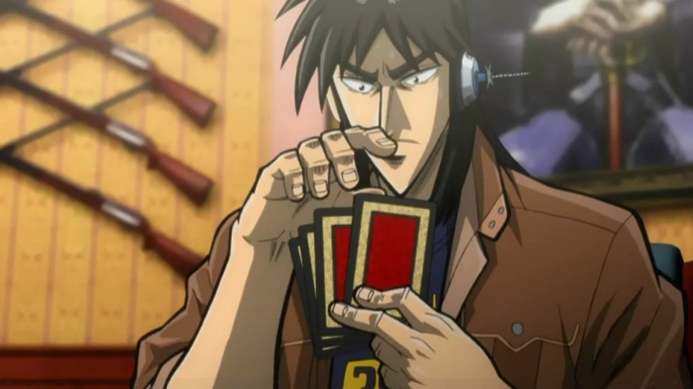

开司
姓名：伊藤开司（伊藤 開司，Itō Kaiji） 性别：男 年龄：故事开始时约30岁人物背景： 开司原本是一个普通的派遣员工，生活中充满了失败和不如意。他对自己的现状感到不满，但又缺乏改变生活的决心和手段。一次偶然的机会，他接触到了名为“Teiai”的巨大企业背后隐藏的黑暗赌博世界。
性格特点：
易冲动：开司经常在情绪的驱使下做出决定，这让他陷入了不少困境。
正义感：他对于不公正的事情有很强的反感，经常为了帮助他人而投身险境。
坚韧不拔：尽管屡遭挫折，开司仍然保持着不轻易放弃的精神。
智慧：在赌博游戏中，开司展现出了出色的洞察力和策略思维。
故事发展： 在《赌博默示录》中，开司因为欠债而被迫参加了一系列残酷的赌博游戏。这些游戏不仅考验赌技，更是对人性的考验。在经历了“限定猜拳”、“E-卡游戏”、“地下铁赛马”等一连串的生死较量后，开司不断地挖掘自己的潜能，同时也在反思赌博给人们生活带来的破坏。
人物象征： 开司在漫画中很多时候被描绘为社会的底层人物，他的经历反映了普通人在面对巨大社会压力和不公正现象时的无奈与挣扎。他的故事提醒人们要警惕赌博的陷阱，同时也展现了人性中不屈不挠、追求正义的一面。
逆境无赖的开司，是一部深刻揭示人性光辉与社会黑暗面的励志小说。故事的主人公，开司，一个普通的不能再普通的青年，在命运的捉弄下，陷入了无尽的逆境。然而，正是这些逆境，锻造了他不屈不挠、勇往直前的性格，使他成为了一个在黑暗中熠熠生辉的无赖英雄。
开司的生活原本平淡无奇，但一场突如其来的金融风暴，让他的生活陷入了困境。背负巨额债务，他不得不告别平静的生活，踏上了一条充满荆棘的求生之路。在这条路上，开司遭遇了社会的冷漠、朋友的背叛、敌人的陷害，甚至一度失去了生活的信心。但每一次跌倒，他都咬牙爬起来，用坚定的信念和不懈的努力，向命运发起挑战。
逆境无赖的开司，不仅是一部个人奋斗史，更是一部揭示社会现实的作品。开司在逆境中的挣扎，反映了当代社会底层人民的生存状态。他们面对生活的压力，不屈不挠，勇敢地追求自己的尊严和价值。开司的形象，成为了无数在逆境中奋斗者的缩影，他的故事，激励着他们在黑暗中寻找光明。
在开司的奋斗过程中，他结识了一群志同道合的朋友，他们共同经历了无数的磨难，最终成为了彼此最坚实的后盾。这些角色各具特色，他们的成长和变化，也是故事的一大看点。开司与他们的友情、信念和牺牲，构成了故事中最感人的篇章。
逆境无赖的开司，以其紧张的情节、深刻的主题和丰富的人物形象，赢得了读者的广泛好评。开司的故事告诉我们，逆境并不可怕，可怕的是在逆境中失去勇气和希望。只要心中有光，哪怕是最黑暗的夜晚，也能找到前进的方向。
开司的人生哲学是“不放弃，不妥协”，他用自己的行动诠释了这一信念。在故事的高潮部分，开司凭借着自己的智慧和勇气，成功地击败了那些试图将他置于死地的敌人，赢得了属于自己的胜利。这场胜利，不仅是开司个人的胜利，更是对所有在逆境中奋斗者的鼓舞。

逆境无赖的开司，是一部充满正能量的作品。它告诉我们，无论生活多么艰难，只要我们不放弃梦想，坚持自己的信念，就一定能够战胜一切困难，实现人生的逆袭。开司的故事，就像一盏明灯，照亮了那些在黑暗中摸索前行的人，让他们看到了希望的光芒。

总之，逆境无赖的开司是一部值得每个人细细品味的作品。它不仅让我们看到了人性的光辉，也让我们反思了社会的不足。开司的形象，将永远激励着那些在逆境中奋斗的人们，成为他们心中不灭的火焰。